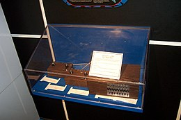
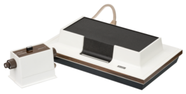

Geschiedenis Pong
Pong is gemaakt door Atari door de ontwikkelaar Allan Alcorn en werd gelanceerd op de Brown Box, de eerste spelcomputer ter wereld.
De Brown Box is ontworpen door Ralph Baer. The Brown Box was een prototype van later de Magnavox Odyssey.

Brown Box Prototype

Dit is Allan Alcorn
Dit is Ralph Baer
Tegen 1972 verkocht Atari 8000 arcade machines en in 1975 maakte Atari hun Pong game in een
Console Systeem. de Magnavox Odyssey word beschouwd als een analoge spelcomputer in
plaats van digitale spelcomputer aangezien de console geen chips en een analoog circuit bevat.

